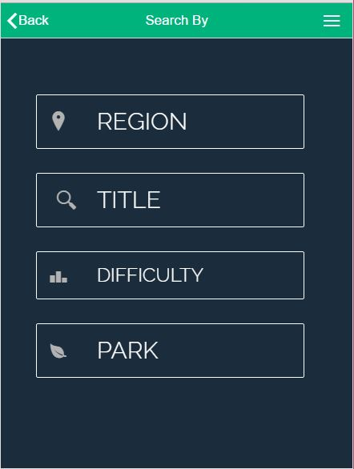
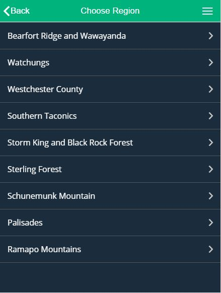
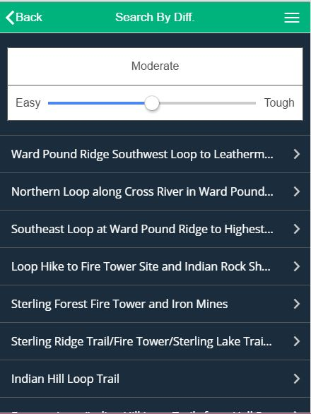
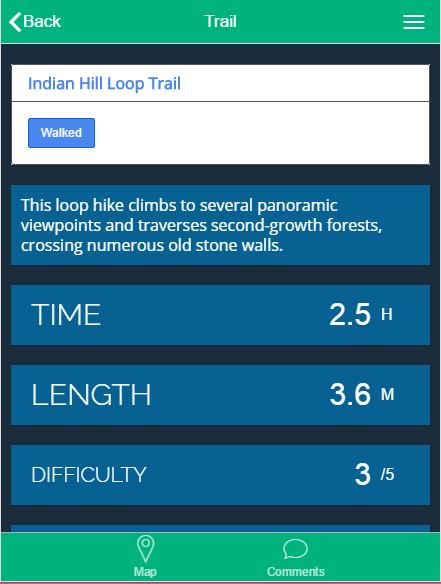
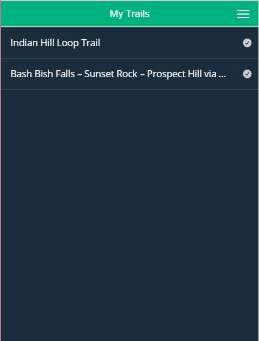
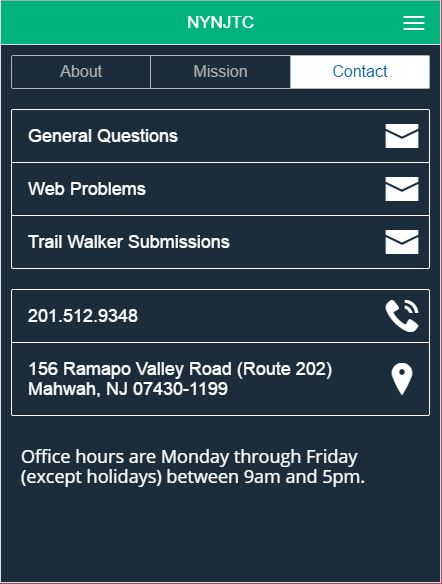
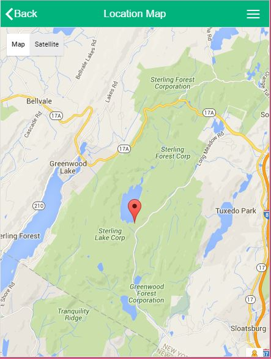

This project is to build mobile application(iOS, Android) for
user who is to search trail courses on New York and New
Jersey area. The main focus is on how to help user find trail
courses in a fast and efficient way. (It is not published yet).
It is a landing page. To accomplish
main purpose - help user
find trail courses in an easy
and faster way - of this application,
only 4 menus are shown
and also, “Find a Hike” button is
placed on the top.

Under “Find a Hike”, user can
choose submenu for an efficient
search way. The reason of using
list view in stead of grid view is
to maintain visual consistence.

The list view is applied and the
arrow on the right side is an
usual way on mobile application.
The color scheme - dark blue
and dark green - is coming from
NYNJTC.

One of the great features of the
application is that user can get
trail list dynamically by scrolling
difficulty bar.

The detail page provides all the
info for the selected trail such
as title, description, hiking time,
length, and location map. For a
visual aid, each item is placed
inside frame.

When user clicks “My Trail” button,
user can go to his/her own
trail page if he/she already logs
in. User can save trails that he/
she visited.

This screen shows general introductory
info for New York New
Jersey Trail Conference. User
can contact NYNJTC by email,
phone through the application.

Using google map API, application
shows user the location of
the trail course.